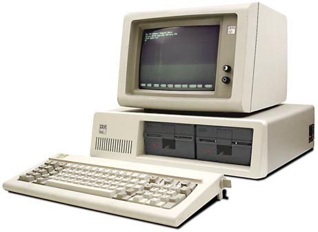
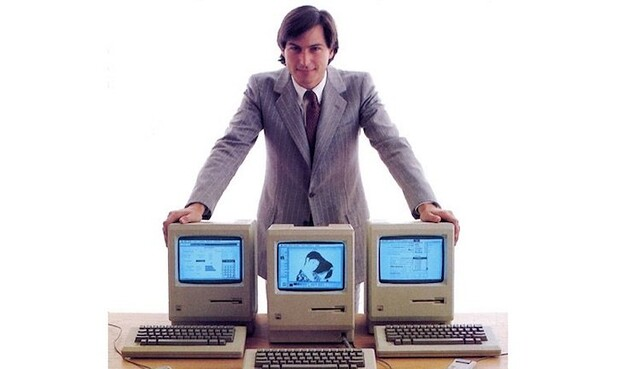

IBM PC
Popularizou o uso do computador pessoal.

O surgimento dos computadores pessoais.
A quarta geração teve como principal inovação o microprocessador, que reuniu todos os principais componentes em um único chip. Isso possibilitou o surgimento dos computadores pessoais (PCs).
Os computadores tornaram-se mais acessíveis ao público, com o uso de interfaces gráficas, mouse e teclado. Softwares passaram a ser amplamente utilizados em casas, escolas e empresas.
Os principais computadores desse período foram:
Popularizou o uso do computador pessoal.
Muito utilizado na educação e em residências.

Introduziu interfaces gráficas mais amigáveis.
Essa geração democratizou o acesso à computação e impulsionou o desenvolvimento de softwares e sistemas operacionais modernos.
Os computadores da quarta geração usaram microprocessadores, tornando-se acessíveis ao público. Marcaram o início da computação pessoal.